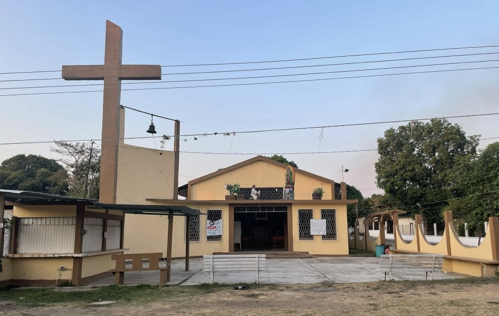
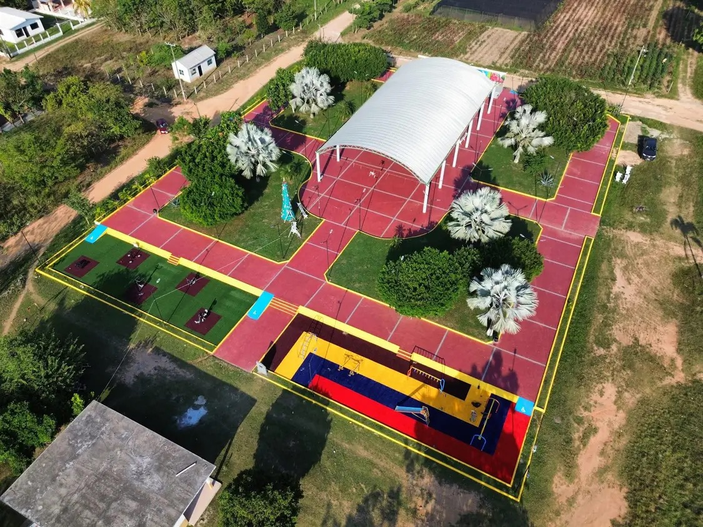
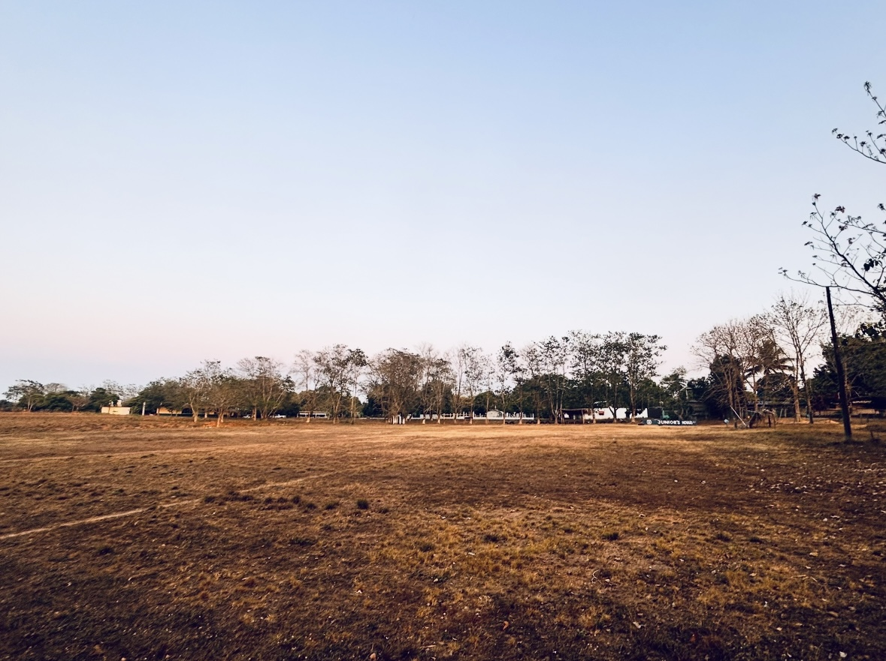

NOVARA: SITIOS Y ACTIVIDADES
IGLESIA: CAPILLA “NUESTRA SEÑORA DE GUADALUPE”
 Ubicación: Av. 5 de mayo, Novara (Tres Valles).En 1924 la familia Martínez, dueña de las tierras donde hoy está Novara, erigió la primera capilla dedicada a la Virgen de Guadalupe. Durante la Guerra Cristera fue despojada, pero décadas después el pueblo reconstruyó el templo que hoy sirve a la comunidad. Es una pequeña capilla de estilo sencillo pero lleno de color, con torreón y detalles en cantera. En su interior destacan imágenes de la Virgen de Guadalupe y un ambiente recogido típico de las comunidades del sur de Veracruz.
Rituales y festividades:
- Misa dominical a las 10:00 h.
- Rosario colectivo en mayo y octubre, con peregrinaciones desde los barrios.
-
Cada
12 de diciembre
se celebra la fiesta patronal con:
- Misa solemne.
- Mañanitas.
- Danzas folclóricas.
- Puestos de antojitos.
PARQUE PÚBLICO DE NOVARA
En diciembre de 2024 se concluyó la “Rehabilitación del Parque Público en la localidad de Novara”, obra encabezada por el Ayuntamiento de Tres Valles, que dotó al espacio de nuevas bancas, senderos pavimentados y luminarias LED.
Principales atractivos:
- Foro al aire libre: ideal para conciertos y eventos culturales.
- Área infantil: juegos seguros y modernos para niños.
- Bancas y senderos peatonales: perfectos para paseos tranquilos y lectura.
- Iluminación LED y jardinería: garantiza un ambiente agradable incluso al caer la tarde.
CAMPO DE FÚTBOL “NOVARA”
Terreno de juego con pasto natural y porterías reglamentarias. Graderío de llantas para unas 50 personas, con sombra natural proporcionada por los árboles. Vestidores y sanitarios básicos.
Vida deportiva y social
Anteriormente se utilizaba el campo por las tardes para el entrenamiento del equipo local de béisbol de Novara, pues se preparaban para los encuentros en liga. Todos los domingos a partir de las 9:00 h había partido, ya fuera de adultos o niños. Actualmente se siguen llevando partidos, aunque ya no están en liga; se organizan para convivir y pasar un rato agradable.
Recomendaciones:
- Llegar con anticipación para hallar sitio bajo la sombra.
- Aprovechar el ambiente festivo y familiar para socializar con la comunidad.